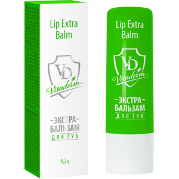

-
Лосьон для тела
Лосьон с маслом сочного граната, D-пантенолом и пчелиным воском вернет твоей коже нежность. Он идеально подходит для ежедневного ухода за кожей любого типа, в том числе очень сухой и истощенной
-
Тонер для лица
В основе тонера мощный увлажняющий комплекс из четырех различных форм гиалуроновой кислоты, восстанавливающий и успокаивающий комплексы, а также действенные бета-глюкан, пантенол и гиалуронат натрия
-
Успокаивающий крем-защита
Крем-защита Vita Derm содержит мощный увлажняющий комплекс из четырех различных форм гиалуроновой кислоты
-
Гель Алоэ вера
Биологически активные вещества алоэ проникают в кожу в 4 раза быстрее и глубже, чем вода, а защитная пленка, образованная экстрактом алоэ, предотвращает потерю влаги кожей
-

Бальзам для губ
Бальзам для губ разработан для профилактики и ускоренной борьбы с инфекциями, вирусами и их последствиями
-
Пенка для умывания
Серия Vita Derm – настоящий фитощит для кожи, чувствительной от природы или ставшей восприимчивой в условиях современного мегаполиса